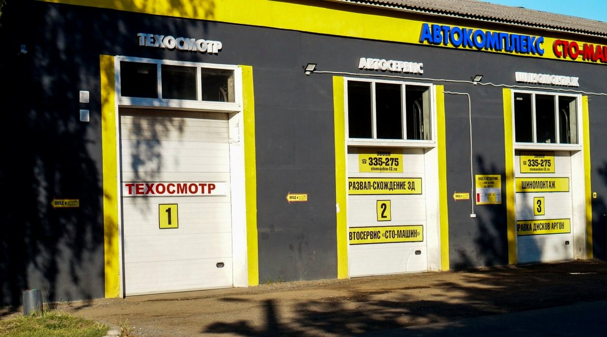
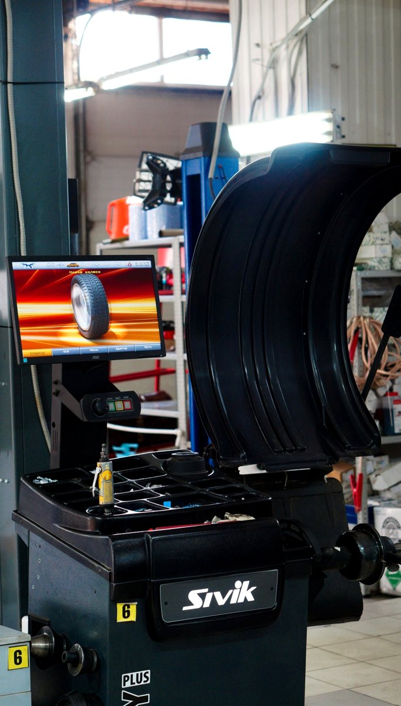
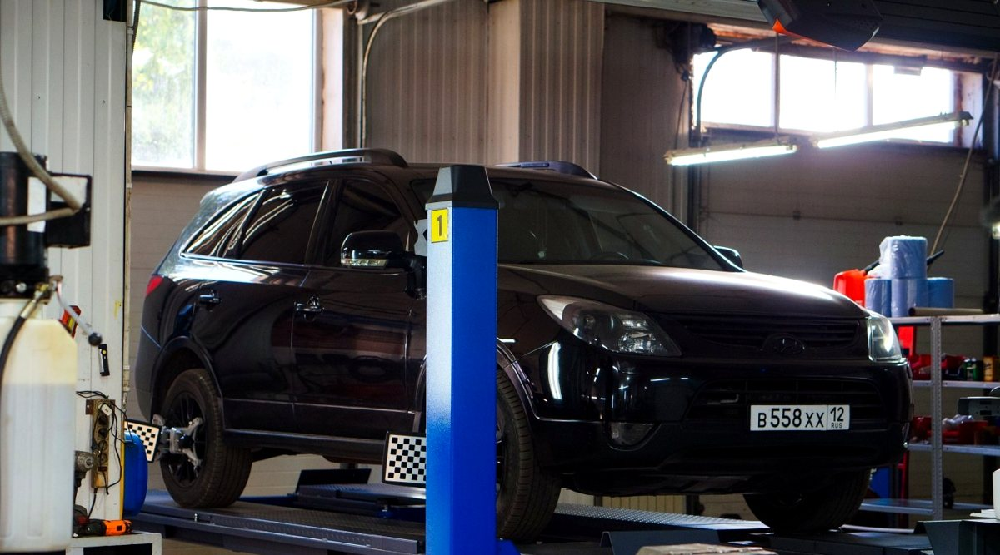
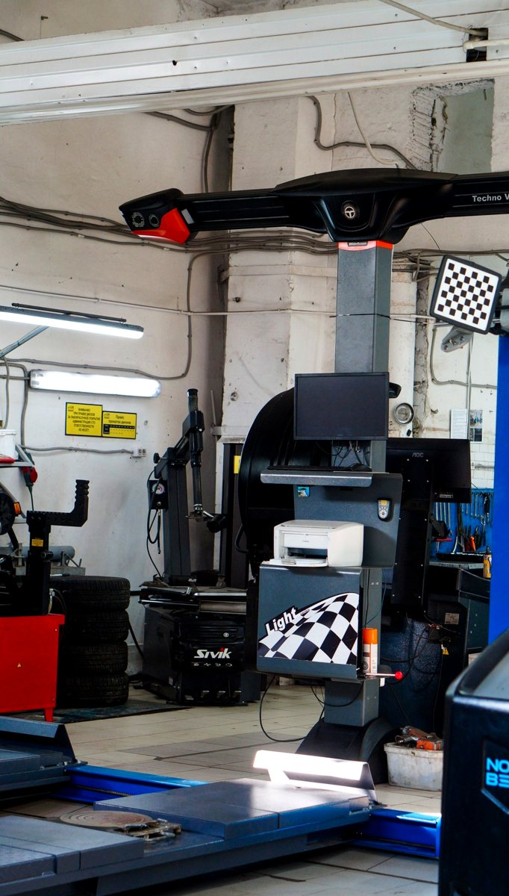

Обслуживание
вашего авто
Выберите направление работ. Состав обслуживания и стоимость мастер подтвердит после уточнения задачи.
Шиномонтаж
Смена шин и балансировка. Укажите автомобиль и диаметр колёс.
Ремонт колёс
Правка и сварка дисков, ремонт порезов и ошиповка шин. Возможность ремонта определяет мастер.
Диагностика
Компьютерная диагностика и проверка на вибростенде. Опишите симптомы в обращении.
Развал-схождение
Уточните возможность проверки углов установки колёс для вашего автомобиля.
Замена масла
В том числе аппаратная замена. Материалы и объём работ согласуйте заранее.
Ходовая часть
Ремонт ходовой части и проточка тормозных дисков. Состав работ — после осмотра.
Что нужно
вашему авто?
Укажите услугу, автомобиль и удобную дату. Форма подготовит текст обращения в MAX.
СТО Машин
на Комсомольской
Автосервис в Йошкар-Оле на Комсомольской, 77/2. Направления обслуживания проверены по открытой карточке 2ГИС 6 октября 2026 года. Для демо использованы ранее сохранённые фотографии из галереи компании.
Комсомольская улица
ежедневно
обсудить обслуживание



